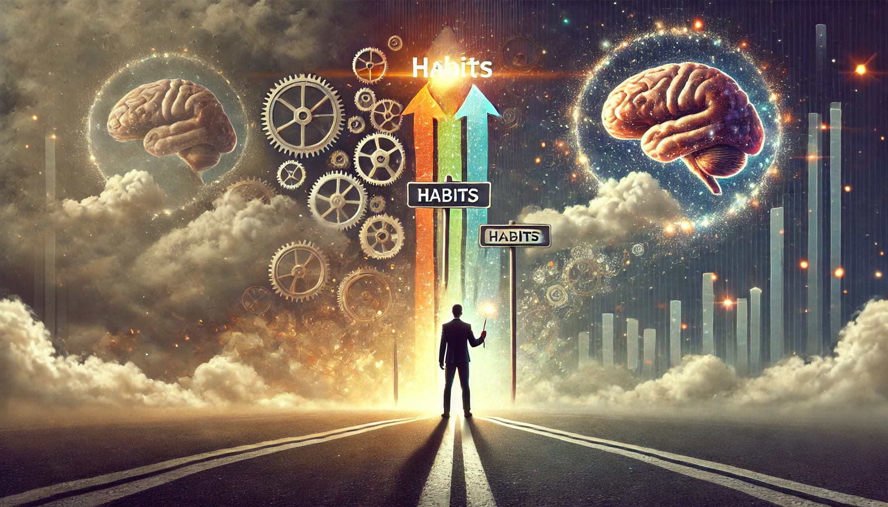

습관의 힘
목차
작가
찰스 두히그(Charles Duhigg)
출판년도
2012년
감상평에 대한 AI그림
이 책은 우리가 일상에서 반복하는 습관이 어떻게 형성되고 변화할 수 있는지를 탐구하며,
개인뿐만 아니라 기업과 사회에서도 습관이 어떤 영향을 미치는지 설명하여 유용한 책이다.

감상평에 대한 AI평가
AI평가
✨ 습관이 우리의 삶을 어떻게 형성하는지를 상징적으로 잘 나타냄.
✨ 기계적인 요소(기어, 시계)와 인간적인 요소(뇌, 갈림길의 선택)를 조화롭게 구성하여 습관의 자동성과 의식적 개입을 동시에 표현함.
✨ 습관이 단순한 반복이 아니라 삶의 방향을 결정하는 중요한 요소임을 강조함.